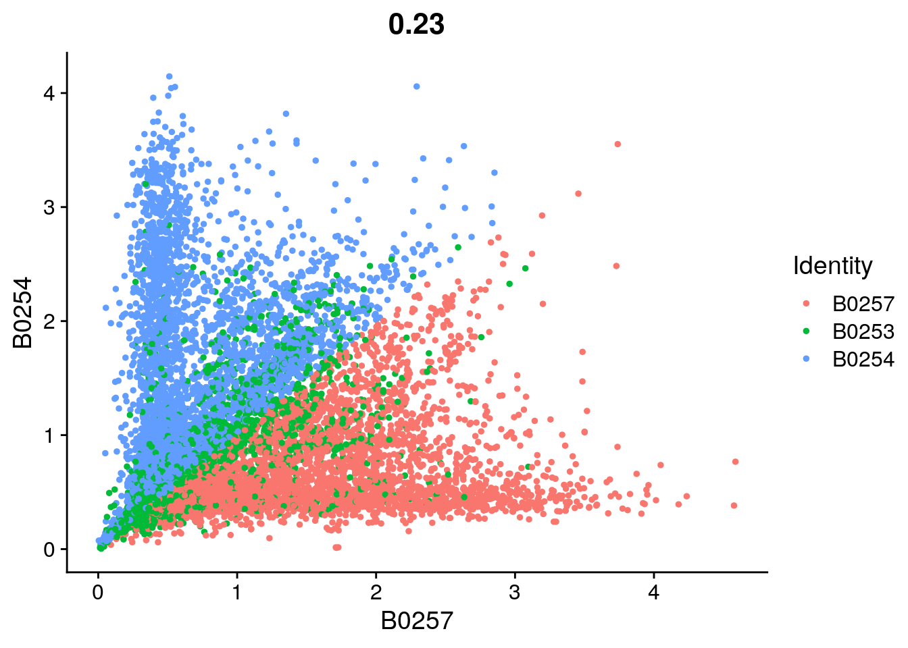
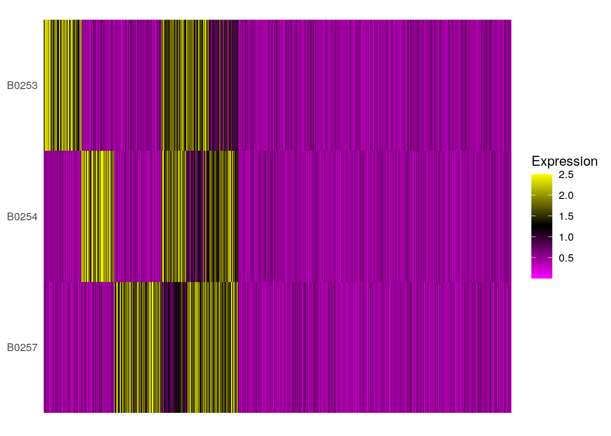
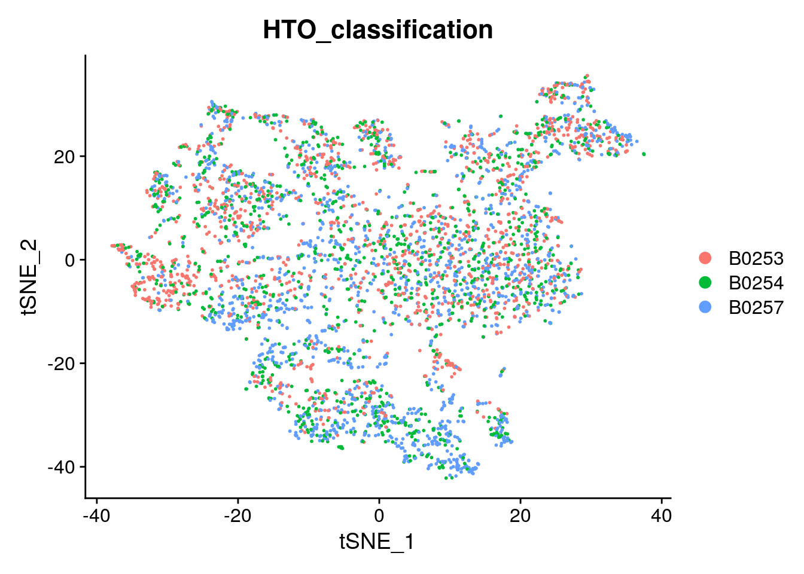

Cell hashing test quality control
Katharina Hembach
5/14/2021
Last updated: 2021-05-14
Checks: 7 0
Knit directory: neural_scRNAseq/
This reproducible R Markdown analysis was created with workflowr (version 1.6.2). The Checks tab describes the reproducibility checks that were applied when the results were created. The Past versions tab lists the development history.
Great! Since the R Markdown file has been committed to the Git repository, you know the exact version of the code that produced these results.
Great job! The global environment was empty. Objects defined in the global environment can affect the analysis in your R Markdown file in unknown ways. For reproduciblity it's best to always run the code in an empty environment.
The command set.seed(20200522) was run prior to running the code in the R Markdown file. Setting a seed ensures that any results that rely on randomness, e.g. subsampling or permutations, are reproducible.
Great job! Recording the operating system, R version, and package versions is critical for reproducibility.
Nice! There were no cached chunks for this analysis, so you can be confident that you successfully produced the results during this run.
Great job! Using relative paths to the files within your workflowr project makes it easier to run your code on other machines.
Great! You are using Git for version control. Tracking code development and connecting the code version to the results is critical for reproducibility.
The results in this page were generated with repository version d03901f. See the Past versions tab to see a history of the changes made to the R Markdown and HTML files.
Note that you need to be careful to ensure that all relevant files for the analysis have been committed to Git prior to generating the results (you can use wflow_publish or wflow_git_commit). workflowr only checks the R Markdown file, but you know if there are other scripts or data files that it depends on. Below is the status of the Git repository when the results were generated:
Ignored files:
Ignored: .DS_Store
Ignored: .Rhistory
Ignored: .Rproj.user/
Ignored: ._.DS_Store
Ignored: ._Filtered.pdf
Ignored: ._Rplots.pdf
Ignored: ._Unfiltered.pdf
Ignored: .__workflowr.yml
Ignored: ._coverage.pdf
Ignored: ._coverage_sashimi.pdf
Ignored: ._coverage_sashimi.png
Ignored: ._neural_scRNAseq.Rproj
Ignored: ._pbDS_cell_level.pdf
Ignored: ._pbDS_top_expr_umap.pdf
Ignored: ._pbDS_upset.pdf
Ignored: ._sashimi.pdf
Ignored: ._stmn2.pdf
Ignored: ._tdp.pdf
Ignored: analysis/.DS_Store
Ignored: analysis/.Rhistory
Ignored: analysis/._.DS_Store
Ignored: analysis/._01-preprocessing.Rmd
Ignored: analysis/._01-preprocessing.html
Ignored: analysis/._02.1-SampleQC.Rmd
Ignored: analysis/._03-filtering.Rmd
Ignored: analysis/._04-clustering.Rmd
Ignored: analysis/._04-clustering.knit.md
Ignored: analysis/._04.1-cell_cycle.Rmd
Ignored: analysis/._05-annotation.Rmd
Ignored: analysis/._07-cluster-analysis-all-timepoints.Rmd
Ignored: analysis/._Lam-0-NSC_no_integration.Rmd
Ignored: analysis/._Lam-01-NSC_integration.Rmd
Ignored: analysis/._Lam-02-NSC_annotation.Rmd
Ignored: analysis/._NSC-1-clustering.Rmd
Ignored: analysis/._NSC-2-annotation.Rmd
Ignored: analysis/.__site.yml
Ignored: analysis/._additional_filtering.Rmd
Ignored: analysis/._additional_filtering_clustering.Rmd
Ignored: analysis/._index.Rmd
Ignored: analysis/._organoid-01-1-qualtiy-control.Rmd
Ignored: analysis/._organoid-01-clustering.Rmd
Ignored: analysis/._organoid-02-integration.Rmd
Ignored: analysis/._organoid-03-cluster_analysis.Rmd
Ignored: analysis/._organoid-04-group_integration.Rmd
Ignored: analysis/._organoid-04-stage_integration.Rmd
Ignored: analysis/._organoid-05-group_integration_cluster_analysis.Rmd
Ignored: analysis/._organoid-05-stage_integration_cluster_analysis.Rmd
Ignored: analysis/._organoid-06-1-prepare-sce.Rmd
Ignored: analysis/._organoid-06-conos-analysis-Seurat.Rmd
Ignored: analysis/._organoid-06-conos-analysis-function.Rmd
Ignored: analysis/._organoid-06-conos-analysis.Rmd
Ignored: analysis/._organoid-06-group-integration-conos-analysis.Rmd
Ignored: analysis/._organoid-07-conos-visualization.Rmd
Ignored: analysis/._organoid-07-group-integration-conos-visualization.Rmd
Ignored: analysis/._organoid-08-conos-comparison.Rmd
Ignored: analysis/._organoid-0x-sample_integration.Rmd
Ignored: analysis/01-preprocessing_cache/
Ignored: analysis/02-1-SampleQC_cache/
Ignored: analysis/02-quality_control_cache/
Ignored: analysis/02.1-SampleQC_cache/
Ignored: analysis/03-filtering_cache/
Ignored: analysis/04-clustering_cache/
Ignored: analysis/04.1-cell_cycle_cache/
Ignored: analysis/05-annotation_cache/
Ignored: analysis/06-clustering-all-timepoints_cache/
Ignored: analysis/07-cluster-analysis-all-timepoints_cache/
Ignored: analysis/Lam-01-NSC_integration_cache/
Ignored: analysis/Lam-02-NSC_annotation_cache/
Ignored: analysis/NSC-1-clustering_cache/
Ignored: analysis/NSC-2-annotation_cache/
Ignored: analysis/TDP-01-preprocessing_cache/
Ignored: analysis/TDP-02-quality_control_cache/
Ignored: analysis/TDP-03-filtering_cache/
Ignored: analysis/TDP-04-clustering_cache/
Ignored: analysis/TDP-05-00-filtering-plasmid-QC_cache/
Ignored: analysis/TDP-05-plasmid_expression_cache/
Ignored: analysis/TDP-06-cluster_analysis_cache/
Ignored: analysis/TDP-07-01-STMN2_expression_cache/
Ignored: analysis/TDP-07-cluster_12_cache/
Ignored: analysis/TDP-08-00-clustering-HA-D96_cache/
Ignored: analysis/TDP-08-01-HA-D96-expression-changes_cache/
Ignored: analysis/TDP-08-02-TDP_target_genes_cache/
Ignored: analysis/TDP-08-clustering-timeline-HA_cache/
Ignored: analysis/additional_filtering_cache/
Ignored: analysis/additional_filtering_clustering_cache/
Ignored: analysis/figure/
Ignored: analysis/organoid-01-1-qualtiy-control_cache/
Ignored: analysis/organoid-01-clustering_cache/
Ignored: analysis/organoid-02-integration_cache/
Ignored: analysis/organoid-03-cluster_analysis_cache/
Ignored: analysis/organoid-04-group_integration_cache/
Ignored: analysis/organoid-04-stage_integration_cache/
Ignored: analysis/organoid-05-group_integration_cluster_analysis_cache/
Ignored: analysis/organoid-05-stage_integration_cluster_analysis_cache/
Ignored: analysis/organoid-06-conos-analysis_cache/
Ignored: analysis/organoid-06-conos-analysis_test_cache/
Ignored: analysis/organoid-06-group-integration-conos-analysis_cache/
Ignored: analysis/organoid-07-conos-visualization_cache/
Ignored: analysis/organoid-07-group-integration-conos-visualization_cache/
Ignored: analysis/organoid-08-conos-comparison_cache/
Ignored: analysis/organoid-0x-sample_integration_cache/
Ignored: analysis/sample5_QC_cache/
Ignored: analysis/timepoints-01-organoid-integration_cache/
Ignored: analysis/timepoints-02-cluster-analysis_cache/
Ignored: data/.DS_Store
Ignored: data/._.DS_Store
Ignored: data/._.smbdeleteAAA17ed8b4b
Ignored: data/._Lam_figure2_markers.R
Ignored: data/._README.md
Ignored: data/._Reactive_astrocytes_markers.xlsx
Ignored: data/._known_NSC_markers.R
Ignored: data/._known_cell_type_markers.R
Ignored: data/._metadata.csv
Ignored: data/._virus_cell_tropism_markers.R
Ignored: data/._~$Reactive_astrocytes_markers.xlsx
Ignored: data/data_sushi/
Ignored: data/filtered_feature_matrices/
Ignored: output/.DS_Store
Ignored: output/._.DS_Store
Ignored: output/._NSC_cluster2_marker_genes.txt
Ignored: output/._TDP-06-no_integration_cluster12_marker_genes.txt
Ignored: output/._TDP-06-no_integration_cluster13_marker_genes.txt
Ignored: output/._organoid_integration_cluster1_marker_genes.txt
Ignored: output/._tbl_TDP-08-01-muscat_cluster_0.txt
Ignored: output/._tbl_TDP-08-01-muscat_cluster_1.txt
Ignored: output/._tbl_TDP-08-01-muscat_cluster_10.txt
Ignored: output/._tbl_TDP-08-01-muscat_cluster_11.txt
Ignored: output/._tbl_TDP-08-01-muscat_cluster_12.txt
Ignored: output/._tbl_TDP-08-01-muscat_cluster_13.txt
Ignored: output/._tbl_TDP-08-01-muscat_cluster_14.txt
Ignored: output/._tbl_TDP-08-01-muscat_cluster_5.txt
Ignored: output/._tbl_TDP-08-01-muscat_cluster_7.txt
Ignored: output/._tbl_TDP-08-01-muscat_cluster_8.txt
Ignored: output/._tbl_TDP-08-01-muscat_cluster_all.xlsx
Ignored: output/._tbl_TDP-08-02-targets_hek_cluster_0.txt
Ignored: output/._tbl_TDP-08-02-targets_hek_cluster_1.txt
Ignored: output/._tbl_TDP-08-02-targets_hek_cluster_10.txt
Ignored: output/._tbl_TDP-08-02-targets_hek_cluster_11.txt
Ignored: output/._tbl_TDP-08-02-targets_hek_cluster_12.txt
Ignored: output/._tbl_TDP-08-02-targets_hek_cluster_13.txt
Ignored: output/._tbl_TDP-08-02-targets_hek_cluster_14.txt
Ignored: output/._tbl_TDP-08-02-targets_hek_cluster_5.txt
Ignored: output/._tbl_TDP-08-02-targets_hek_cluster_7.txt
Ignored: output/._tbl_TDP-08-02-targets_hek_cluster_8.txt
Ignored: output/._tbl_TDP-08-02-targets_hek_cluster_all.xlsx
Ignored: output/._~$tbl_TDP-08-02-targets_hek_cluster_all.xlsx
Ignored: output/Lam-01-clustering.rds
Ignored: output/NSC_1_clustering.rds
Ignored: output/NSC_cluster1_marker_genes.txt
Ignored: output/NSC_cluster2_marker_genes.txt
Ignored: output/NSC_cluster3_marker_genes.txt
Ignored: output/NSC_cluster4_marker_genes.txt
Ignored: output/NSC_cluster5_marker_genes.txt
Ignored: output/NSC_cluster6_marker_genes.txt
Ignored: output/NSC_cluster7_marker_genes.txt
Ignored: output/TDP-06-no_integration_cluster0_marker_genes.txt
Ignored: output/TDP-06-no_integration_cluster10_marker_genes.txt
Ignored: output/TDP-06-no_integration_cluster11_marker_genes.txt
Ignored: output/TDP-06-no_integration_cluster12_marker_genes.txt
Ignored: output/TDP-06-no_integration_cluster13_marker_genes.txt
Ignored: output/TDP-06-no_integration_cluster14_marker_genes.txt
Ignored: output/TDP-06-no_integration_cluster15_marker_genes.txt
Ignored: output/TDP-06-no_integration_cluster16_marker_genes.txt
Ignored: output/TDP-06-no_integration_cluster17_marker_genes.txt
Ignored: output/TDP-06-no_integration_cluster1_marker_genes.txt
Ignored: output/TDP-06-no_integration_cluster2_marker_genes.txt
Ignored: output/TDP-06-no_integration_cluster3_marker_genes.txt
Ignored: output/TDP-06-no_integration_cluster4_marker_genes.txt
Ignored: output/TDP-06-no_integration_cluster5_marker_genes.txt
Ignored: output/TDP-06-no_integration_cluster6_marker_genes.txt
Ignored: output/TDP-06-no_integration_cluster7_marker_genes.txt
Ignored: output/TDP-06-no_integration_cluster8_marker_genes.txt
Ignored: output/TDP-06-no_integration_cluster9_marker_genes.txt
Ignored: output/TDP-06_scran_markers.rds
Ignored: output/additional_filtering.rds
Ignored: output/conos/
Ignored: output/conos_organoid-06-conos-analysis.rds
Ignored: output/conos_organoid-06-group-integration-conos-analysis.rds
Ignored: output/figures/
Ignored: output/organoid_integration_cluster10_marker_genes.txt
Ignored: output/organoid_integration_cluster11_marker_genes.txt
Ignored: output/organoid_integration_cluster12_marker_genes.txt
Ignored: output/organoid_integration_cluster13_marker_genes.txt
Ignored: output/organoid_integration_cluster14_marker_genes.txt
Ignored: output/organoid_integration_cluster15_marker_genes.txt
Ignored: output/organoid_integration_cluster16_marker_genes.txt
Ignored: output/organoid_integration_cluster17_marker_genes.txt
Ignored: output/organoid_integration_cluster1_marker_genes.txt
Ignored: output/organoid_integration_cluster2_marker_genes.txt
Ignored: output/organoid_integration_cluster3_marker_genes.txt
Ignored: output/organoid_integration_cluster4_marker_genes.txt
Ignored: output/organoid_integration_cluster5_marker_genes.txt
Ignored: output/organoid_integration_cluster6_marker_genes.txt
Ignored: output/organoid_integration_cluster7_marker_genes.txt
Ignored: output/organoid_integration_cluster8_marker_genes.txt
Ignored: output/organoid_integration_cluster9_marker_genes.txt
Ignored: output/res_TDP-08-01-muscat.rds
Ignored: output/sce_01_preprocessing.rds
Ignored: output/sce_02_quality_control.rds
Ignored: output/sce_03_filtering.rds
Ignored: output/sce_03_filtering_all_genes.rds
Ignored: output/sce_06-1-prepare-sce.rds
Ignored: output/sce_TDP-08-01-muscat.rds
Ignored: output/sce_TDP_01_preprocessing.rds
Ignored: output/sce_TDP_02_quality_control.rds
Ignored: output/sce_TDP_03_filtering.rds
Ignored: output/sce_TDP_03_filtering_all_genes.rds
Ignored: output/sce_organoid-01-clustering.rds
Ignored: output/sce_preprocessing.rds
Ignored: output/so_04-stage_integration.rds
Ignored: output/so_04_1_cell_cycle.rds
Ignored: output/so_04_clustering.rds
Ignored: output/so_06-clustering_all_timepoints.rds
Ignored: output/so_08-00_clustering_HA_D96.rds
Ignored: output/so_08-clustering_timeline_HA.rds
Ignored: output/so_0x-sample_integration.rds
Ignored: output/so_TDP-06-cluster-analysis.rds
Ignored: output/so_TDP_04_clustering.rds
Ignored: output/so_TDP_05_plasmid_expression.rds
Ignored: output/so_additional_filtering_clustering.rds
Ignored: output/so_integrated_organoid-02-integration.rds
Ignored: output/so_merged_organoid-02-integration.rds
Ignored: output/so_organoid-01-clustering.rds
Ignored: output/so_sample_organoid-01-clustering.rds
Ignored: output/so_timepoints-01-organoid_integration.rds
Ignored: output/tbl_TDP-08-01-muscat.rds
Ignored: output/tbl_TDP-08-01-muscat_cluster_0.txt
Ignored: output/tbl_TDP-08-01-muscat_cluster_1.txt
Ignored: output/tbl_TDP-08-01-muscat_cluster_10.txt
Ignored: output/tbl_TDP-08-01-muscat_cluster_11.txt
Ignored: output/tbl_TDP-08-01-muscat_cluster_12.txt
Ignored: output/tbl_TDP-08-01-muscat_cluster_13.txt
Ignored: output/tbl_TDP-08-01-muscat_cluster_14.txt
Ignored: output/tbl_TDP-08-01-muscat_cluster_5.txt
Ignored: output/tbl_TDP-08-01-muscat_cluster_7.txt
Ignored: output/tbl_TDP-08-01-muscat_cluster_8.txt
Ignored: output/tbl_TDP-08-01-muscat_cluster_all.xlsx
Ignored: output/tbl_TDP-08-02-targets_hek.rds
Ignored: output/tbl_TDP-08-02-targets_hek_cluster_0.txt
Ignored: output/tbl_TDP-08-02-targets_hek_cluster_1.txt
Ignored: output/tbl_TDP-08-02-targets_hek_cluster_10.txt
Ignored: output/tbl_TDP-08-02-targets_hek_cluster_11.txt
Ignored: output/tbl_TDP-08-02-targets_hek_cluster_12.txt
Ignored: output/tbl_TDP-08-02-targets_hek_cluster_13.txt
Ignored: output/tbl_TDP-08-02-targets_hek_cluster_14.txt
Ignored: output/tbl_TDP-08-02-targets_hek_cluster_5.txt
Ignored: output/tbl_TDP-08-02-targets_hek_cluster_7.txt
Ignored: output/tbl_TDP-08-02-targets_hek_cluster_8.txt
Ignored: output/tbl_TDP-08-02-targets_hek_cluster_all.xlsx
Ignored: output/~$tbl_TDP-08-02-targets_hek_cluster_all.xlsx
Ignored: scripts/.DS_Store
Ignored: scripts/._.DS_Store
Ignored: scripts/._bu_Rcode.R
Ignored: scripts/._plasmid_expression.sh
Ignored: scripts/._plasmid_expression_cell_hashing_test.sh
Ignored: scripts/._prepare_salmon_transcripts.R
Ignored: scripts/._prepare_salmon_transcripts_cell_hashing_test.R
Untracked files:
Untracked: Filtered.pdf
Untracked: Rplots.pdf
Untracked: Unfiltered
Untracked: Unfiltered.pdf
Untracked: analysis/Lam-0-NSC_no_integration.Rmd
Untracked: analysis/TDP-07-01-STMN2_expression copy.Rmd
Untracked: analysis/additional_filtering.Rmd
Untracked: analysis/additional_filtering_clustering.Rmd
Untracked: analysis/organoid-01-1-qualtiy-control.Rmd
Untracked: analysis/organoid-06-conos-analysis-Seurat.Rmd
Untracked: analysis/organoid-06-conos-analysis-function.Rmd
Untracked: analysis/organoid-07-conos-visualization.Rmd
Untracked: analysis/organoid-07-group-integration-conos-visualization.Rmd
Untracked: analysis/organoid-08-conos-comparison.Rmd
Untracked: analysis/organoid-0x-sample_integration.Rmd
Untracked: analysis/sample5_QC.Rmd
Untracked: coverage.pdf
Untracked: coverage_sashimi.pdf
Untracked: coverage_sashimi.png
Untracked: data/Homo_sapiens.GRCh38.98.sorted.gtf
Untracked: data/Kanton_et_al/
Untracked: data/Lam_et_al/
Untracked: data/Sep2020/
Untracked: data/cell_hashing_test/
Untracked: data/reference/
Untracked: data/virus_cell_tropism_markers.R
Untracked: data/~$Reactive_astrocytes_markers.xlsx
Untracked: pbDS_cell_level.pdf
Untracked: pbDS_heatmap.pdf
Untracked: pbDS_top_expr_umap.pdf
Untracked: pbDS_upset.pdf
Untracked: sashimi.pdf
Untracked: scripts/bu_Rcode.R
Untracked: scripts/bu_code.Rmd
Untracked: scripts/plasmid_expression_cell_hashing_test.sh
Untracked: scripts/prepare_salmon_transcripts_cell_hashing_test.R
Untracked: scripts/salmon-latest_linux_x86_64/
Untracked: stmn2.pdf
Untracked: tdp.pdf
Unstaged changes:
Modified: analysis/05-annotation.Rmd
Modified: analysis/TDP-04-clustering.Rmd
Modified: analysis/TDP-08-01-HA-D96-expression-changes.Rmd
Modified: analysis/_site.yml
Modified: analysis/organoid-02-integration.Rmd
Modified: analysis/organoid-04-group_integration.Rmd
Modified: analysis/organoid-06-conos-analysis.Rmd
Note that any generated files, e.g. HTML, png, CSS, etc., are not included in this status report because it is ok for generated content to have uncommitted changes.
These are the previous versions of the repository in which changes were made to the R Markdown (analysis/CH-test-01-preprocessing.Rmd) and HTML (docs/CH-test-01-preprocessing.html) files. If you've configured a remote Git repository (see ?wflow_git_remote), click on the hyperlinks in the table below to view the files as they were in that past version.
| File | Version | Author | Date | Message |
|---|---|---|---|---|
| Rmd | d03901f | khembach | 2021-05-14 | preprocessing and quality control of HTO test experiment |
Load packages
library(DropletUtils)
library(BiocParallel)
library(ggplot2)
library(scater)
library(readxl)
library(Seurat)
library(scales)
library(viridis)
library(dplyr)Importing CellRanger output and metadata
fs <- file.path("data", "cell_hashing_test",
"CellRangerCount_57443_2021-05-12--11-37-28", "HashTag_test",
"filtered_feature_bc_matrix.h5")
names(fs) <- "cell_hashing_test"
sce_raw <- read10xCounts(samples = fs)
# rename colnames and dimnames
rowData(sce_raw)$Type <- NULL
names(rowData(sce_raw)) <- c("ensembl_id", "symbol")
names(colData(sce_raw)) <- c("sample_id", "barcode")
sce_raw$sample_id <- factor(sce_raw$sample_id)
# load metadata
meta <- read_excel(file.path("data", "cell_hashing_test", "SampleName_feature_ref_MHP.xlsm"))
m <- match(meta$name, rowData(sce_raw)$symbol)
## separate gene counts from HTO counts
rowData(sce_raw) %>% tailDataFrame with 6 rows and 2 columns
ensembl_id symbol
<character> <character>
ENSG00000276017 ENSG00000276017 AC007325.1
ENSG00000278817 ENSG00000278817 AC007325.4
ENSG00000277196 ENSG00000277196 AC007325.2
B0253 B0253 Hashtag3
B0254 B0254 Hashtag4
B0257 B0257 Hashtag7sce <- sce_raw[-m,]
dimnames(sce) <- list(with(rowData(sce), paste(ensembl_id, symbol, sep = ".")),
with(colData(sce), paste(barcode, sample_id, sep = ".")))Quality control
We compute cell-level QC.
# remove empty rows
sce <- sce[rowSums(counts(sce) > 0) > 0, ]
dim(sce)[1] 18824 17631(mito <- grep("MT-", rownames(sce), value = TRUE)) [1] "ENSG00000210049.MT-TF" "ENSG00000211459.MT-RNR1"
[3] "ENSG00000210077.MT-TV" "ENSG00000210082.MT-RNR2"
[5] "ENSG00000209082.MT-TL1" "ENSG00000198888.MT-ND1"
[7] "ENSG00000210100.MT-TI" "ENSG00000210107.MT-TQ"
[9] "ENSG00000210112.MT-TM" "ENSG00000198763.MT-ND2"
[11] "ENSG00000210117.MT-TW" "ENSG00000210127.MT-TA"
[13] "ENSG00000210135.MT-TN" "ENSG00000210140.MT-TC"
[15] "ENSG00000210144.MT-TY" "ENSG00000198804.MT-CO1"
[17] "ENSG00000210151.MT-TS1" "ENSG00000210154.MT-TD"
[19] "ENSG00000198712.MT-CO2" "ENSG00000210156.MT-TK"
[21] "ENSG00000228253.MT-ATP8" "ENSG00000198899.MT-ATP6"
[23] "ENSG00000198938.MT-CO3" "ENSG00000210164.MT-TG"
[25] "ENSG00000198840.MT-ND3" "ENSG00000210174.MT-TR"
[27] "ENSG00000212907.MT-ND4L" "ENSG00000198886.MT-ND4"
[29] "ENSG00000210176.MT-TH" "ENSG00000210184.MT-TS2"
[31] "ENSG00000210191.MT-TL2" "ENSG00000198786.MT-ND5"
[33] "ENSG00000198695.MT-ND6" "ENSG00000210194.MT-TE"
[35] "ENSG00000198727.MT-CYB" "ENSG00000210195.MT-TT"
[37] "ENSG00000210196.MT-TP" sce <- addPerCellQC(sce, subsets = list(Mt = mito))
# we compute the fraction of mitochondrial genes and the logit of it
sce$subsets_Mt_fraction <- (sce$subsets_Mt_percent + 0.001) /100
sce$subsets_Mt_fraction_logit <- qlogis(sce$subsets_Mt_fraction + 0.001)
# library size
summary(sce$sum) Min. 1st Qu. Median Mean 3rd Qu. Max.
500 642 862 5216 5818 96619 # number of detected genes per cell
summary(sce$detected) Min. 1st Qu. Median Mean 3rd Qu. Max.
302 491 609 1650 2540 9081 # percentage of counts that come from mitochondrial genes:
summary(sce$subsets_Mt_percent) Min. 1st Qu. Median Mean 3rd Qu. Max.
0.01666 3.86824 7.70896 9.93049 13.29026 87.60776 Diagnostic plots
The number of counts per cell:
plotColData(sce, x = "sample_id", y = "sum") + scale_y_log10()The number of genes:
plotColData(sce, x = "sample_id", y = "detected") + scale_y_log10() The percentage of mitochondrial genes:
plotColData(sce, x = "sample_id", y = "subsets_Mt_percent")We plot the total number of counts against the number of detected genes and color by the fraction of mitochondrial genes:
cd <- data.frame(colData(sce))
ggplot(cd, aes(x = sum, y = detected, color = subsets_Mt_fraction)) +
geom_point(alpha = 0.7) +
geom_density_2d(color = "grey", bins = 6) +
scale_x_log10() +
scale_y_log10() +
facet_wrap(~sample_id) +
theme_bw() +
theme(axis.text.x = element_text(angle = 45, hjust = 1)) +
xlab("sum of counts") +
ylab("number of detected genes") +
labs(color = "mitochondrial fraction") +
scale_color_viridis(trans = "logit", breaks = c(0.01, 0.1, 0.25, 0.5, 0.75))
We plot the total number of counts against the mitochondrial content. Well-behaved cells should have many expressed genes and a low fraction of mitochondrial genes. High mitochondrial content indicates empty or damaged cells.
ggplot(cd, aes(x = sum, y = subsets_Mt_fraction)) +
geom_point(color = "darkgrey", alpha = 0.3) +
geom_density_2d(color = "lightblue") +
scale_x_log10() +
scale_y_continuous(trans = 'logit',
breaks = c(0.01, 0.05, 0.1, 0.2, 0.5, 0.75)) +
facet_wrap(~sample_id) +
theme_bw() +
theme(axis.text.x = element_text(angle = 45, hjust = 1)) +
xlab("sum of counts") +
ylab("logit(mitochondrial fraction)")Identification of outlier cells
Based on the QC metrics, we now identify outlier cells:
cols <- c("sum", "detected", "subsets_Mt_percent")
log <- c(TRUE, TRUE, FALSE)
type <- c("lower", "lower", "higher")
drop_cols <- paste0(cols, "_drop")
for (i in seq_along(cols))
colData(sce)[[drop_cols[i]]] <- isOutlier(sce[[cols[i]]],
nmads = 1, type = type[i], log = log[i], batch = sce$sample_id)
# Overlap of outlier cells from two metrics
sapply(drop_cols, function(i)
sapply(drop_cols, function(j)
sum(sce[[i]] & sce[[j]]))) sum_drop detected_drop subsets_Mt_percent_drop
sum_drop 0 0 0
detected_drop 0 53 49
subsets_Mt_percent_drop 0 49 3900colData(sce)$discard <- rowSums(data.frame(colData(sce)[,drop_cols])) > 0
table(colData(sce)$discard)
FALSE TRUE
13727 3904 ## Plot the metrics and highlight the discarded cells
plotColData(sce, x = "sample_id", y = "sum", colour_by = "discard") +
scale_y_log10()plotColData(sce, x = "sample_id", y = "detected", colour_by = "discard") +
scale_y_log10()plotColData(sce, x = "sample_id", y = "subsets_Mt_percent",
colour_by = "discard")## we manually filter filter the cells with less than 2000 UMIs
colData(sce)$manual_discard_sum <- colData(sce)$sum < 1000
## filter the cells with less than 800 detected genes
colData(sce)$manual_discard_detected <- colData(sce)$detected < 800
## highlight all manually discarded cells
colData(sce)$manual_discard <- colData(sce)$manual_discard_sum |
colData(sce)$manual_discard_detected
plotColData(sce, x = "sample_id", y = "sum", colour_by = "manual_discard") +
scale_y_log10()plotColData(sce, x = "sample_id", y = "detected", colour_by = "manual_discard") +
scale_y_log10()## highlight all discarded cells
colData(sce)$discard <- colData(sce)$manual_discard |
colData(sce)$discard
plotColData(sce, x = "sample_id", y = "detected", colour_by = "discard") +
scale_y_log10()plotColData(sce, x = "sample_id", y = "sum", colour_by = "discard") +
scale_y_log10()plotColData(sce, x = "sample_id", y = "subsets_Mt_percent",
colour_by = "discard")table(colData(sce)$discard)
FALSE TRUE
5542 12089 We discard the outlier cells
dim(sce)[1] 18824 17631sce_filtered <- sce[,!sce$discard]
dim(sce_filtered)[1] 18824 5542Create Seurat object and split gene and HTO counts
## convert DDelayedMatrix to dgCMatrix for import into Seurat object
counts <- as(counts(sce_filtered, withDimnames = FALSE), "dgCMatrix")
colnames(counts) <- colnames(counts(sce_filtered))
rownames(counts) <- rownames(counts(sce_filtered))
so <- CreateSeuratObject(
counts = counts,
meta.data = data.frame(colData(sce_filtered)),
project = "cell_hashing_test")Warning: Feature names cannot have underscores ('_'), replacing with dashes
('-')## add HTO data as independent assay
hto_counts <- as(counts(sce_raw, withDimnames = FALSE)[m,with(colData(sce),
paste(barcode, sample_id, sep = ".")) %in%
colnames(sce_filtered)], "dgCMatrix")
colnames(hto_counts) <- colnames(sce_filtered)
rownames(hto_counts) <- rownames(sce_raw)[m]
so[["HTO"]] <- CreateAssayObject(counts = hto_counts)Data normalization
DefaultAssay(so) <- "RNA"
# Normalize RNA data with log normalization
so <- NormalizeData(so)
# Find and scale variable features
so <- FindVariableFeatures(so, selection.method = "mean.var.plot")
so <- ScaleData(so, features = VariableFeatures(so))
# Normalize HTO data, here we use centered log-ratio (CLR) transformation
so <- NormalizeData(so, assay = "HTO", normalization.method = "CLR")Demultiplex cells based on HTO enrichment
so <- HTODemux(so, assay = "HTO", positive.quantile = 0.99)Visualize results
# Global classification results
table(so$HTO_classification.global)
Doublet Negative Singlet
656 2119 2767 # Group cells based on the max HTO signal
Idents(so) <- "HTO_maxID"
# Group cells based on the max HTO signal
RidgePlot(so, assay = "HTO", features = rownames(so[["HTO"]]), ncol = 3)
# Visualize pairs of HTO signals to check mutual exclusivity in singlets
DefaultAssay(object = so) <- "HTO"
FeatureScatter(so, feature1 = "B0253", feature2 = "B0254")FeatureScatter(so, feature1 = "B0257", feature2 = "B0254")
FeatureScatter(so, feature1 = "B0253", feature2 = "B0257")
## compare number of UMIs for singlet's, doublets and negative cells
Idents(so) <- "HTO_classification.global"
VlnPlot(so, features = "nCount_HTO", pt.size = 0.1, log = TRUE)VlnPlot(so, features = "nCount_RNA", pt.size = 0.1, log = TRUE)## tSNE for HTOs
# First, we will remove negative cells from the object
subs <- subset(so, idents = "Negative", invert = TRUE)
subs$HTO_classification %>% table.
B0253 B0253_B0254 B0253_B0257 B0254 B0254_B0257 B0257
830 236 198 939 222 998 # Calculate a tSNE embedding of the HTO data
DefaultAssay(subs) <- "HTO"
subs <- ScaleData(subs, features = rownames(subs),
verbose = FALSE)
subs <- RunPCA(subs, features = rownames(subs), approx = FALSE)Warning in print.DimReduc(x = reduction.data, dims = ndims.print, nfeatures =
nfeatures.print): Only 3 dimensions have been computed.Warning: Requested number is larger than the number of available items (3).
Setting to 3.
Warning: Requested number is larger than the number of available items (3).
Setting to 3.
Warning: Requested number is larger than the number of available items (3).
Setting to 3.subs <- RunTSNE(subs, dims = 1:3, perplexity = 100)
Idents(subs) <- "HTO_classification.global"
DimPlot(subs)
Idents(subs) <- 'HTO_classification'
DimPlot(subs)
# HTO heatmap
HTOHeatmap(so, assay = "HTO", ncells = 5000)
Cluster based on gene counts and visualize cells
DefaultAssay(so) <- "RNA"
# Extract the singlets
subs <- subset(so, idents = "Singlet")
subs$HTO_classification %>% table.
B0253 B0254 B0257
830 939 998 # Select the top 1000 most variable features
subs <- FindVariableFeatures(subs, selection.method = "mean.var.plot")
# Scaling RNA data, we only scale the variable features here for efficiency
subs <- ScaleData(subs, features = VariableFeatures(subs))
# Run PCA
subs <- RunPCA(subs, features = VariableFeatures(subs))
# We select the top 10 PCs for clustering and tSNE based on PCElbowPlot
subs <- FindNeighbors(subs, reduction = "pca", dims = 1:10)
subs <- FindClusters(subs, resolution = 0.6, verbose = FALSE)
subs <- RunTSNE(subs, reduction = "pca", dims = 1:10)
subs <- RunUMAP(subs, reduction = "pca", dims = 1:10)Warning: The default method for RunUMAP has changed from calling Python UMAP via reticulate to the R-native UWOT using the cosine metric
To use Python UMAP via reticulate, set umap.method to 'umap-learn' and metric to 'correlation'
This message will be shown once per session# Projecting singlet identities on TSNE visualization
DimPlot(subs, group.by = "HTO_classification", reduction = "tsne")
DimPlot(subs, group.by = "HTO_classification", reduction = "umap")Save data to RDS
saveRDS(sce, file.path("output", "CH-test-01-preprocessing.rds"))
sessionInfo()R version 4.0.5 (2021-03-31)
Platform: x86_64-pc-linux-gnu (64-bit)
Running under: Ubuntu 18.04.5 LTS
Matrix products: default
BLAS: /usr/local/R/R-4.0.5/lib/libRblas.so
LAPACK: /usr/local/R/R-4.0.5/lib/libRlapack.so
locale:
[1] LC_CTYPE=en_US.UTF-8 LC_NUMERIC=C
[3] LC_TIME=en_US.UTF-8 LC_COLLATE=en_US.UTF-8
[5] LC_MONETARY=en_US.UTF-8 LC_MESSAGES=en_US.UTF-8
[7] LC_PAPER=en_US.UTF-8 LC_NAME=C
[9] LC_ADDRESS=C LC_TELEPHONE=C
[11] LC_MEASUREMENT=en_US.UTF-8 LC_IDENTIFICATION=C
attached base packages:
[1] parallel stats4 stats graphics grDevices utils datasets
[8] methods base
other attached packages:
[1] dplyr_1.0.2 viridis_0.5.1
[3] viridisLite_0.3.0 scales_1.1.1
[5] SeuratObject_4.0.1 Seurat_4.0.1
[7] readxl_1.3.1 scater_1.16.2
[9] ggplot2_3.3.2 BiocParallel_1.22.0
[11] DropletUtils_1.8.0 SingleCellExperiment_1.10.1
[13] SummarizedExperiment_1.18.1 DelayedArray_0.14.0
[15] matrixStats_0.56.0 Biobase_2.48.0
[17] GenomicRanges_1.40.0 GenomeInfoDb_1.24.2
[19] IRanges_2.22.2 S4Vectors_0.26.1
[21] BiocGenerics_0.34.0 workflowr_1.6.2
loaded via a namespace (and not attached):
[1] backports_1.1.9 plyr_1.8.6
[3] igraph_1.2.5 lazyeval_0.2.2
[5] splines_4.0.5 listenv_0.8.0
[7] scattermore_0.7 digest_0.6.25
[9] htmltools_0.5.0 magrittr_1.5
[11] tensor_1.5 cluster_2.1.0
[13] ROCR_1.0-11 limma_3.44.3
[15] globals_0.12.5 R.utils_2.9.2
[17] spatstat.sparse_2.0-0 colorspace_1.4-1
[19] rappdirs_0.3.1 ggrepel_0.8.2
[21] xfun_0.15 crayon_1.3.4
[23] RCurl_1.98-1.3 jsonlite_1.7.2
[25] spatstat.data_2.1-0 survival_3.2-3
[27] zoo_1.8-8 glue_1.4.2
[29] polyclip_1.10-0 gtable_0.3.0
[31] zlibbioc_1.34.0 XVector_0.28.0
[33] leiden_0.3.3 BiocSingular_1.4.0
[35] Rhdf5lib_1.10.0 future.apply_1.6.0
[37] HDF5Array_1.16.1 abind_1.4-5
[39] edgeR_3.30.3 miniUI_0.1.1.1
[41] Rcpp_1.0.5 isoband_0.2.2
[43] xtable_1.8-4 reticulate_1.16
[45] spatstat.core_2.1-2 dqrng_0.2.1
[47] rsvd_1.0.3 htmlwidgets_1.5.1
[49] httr_1.4.2 RColorBrewer_1.1-2
[51] ellipsis_0.3.1 ica_1.0-2
[53] farver_2.0.3 pkgconfig_2.0.3
[55] R.methodsS3_1.8.0 uwot_0.1.10
[57] deldir_0.2-10 locfit_1.5-9.4
[59] labeling_0.3 tidyselect_1.1.0
[61] rlang_0.4.10 reshape2_1.4.4
[63] later_1.1.0.1 munsell_0.5.0
[65] cellranger_1.1.0 tools_4.0.5
[67] generics_0.0.2 ggridges_0.5.2
[69] evaluate_0.14 stringr_1.4.0
[71] fastmap_1.0.1 goftest_1.2-2
[73] yaml_2.2.1 knitr_1.29
[75] fs_1.5.0 fitdistrplus_1.1-1
[77] purrr_0.3.4 RANN_2.6.1
[79] nlme_3.1-148 pbapply_1.4-2
[81] future_1.17.0 whisker_0.4
[83] mime_0.9 R.oo_1.23.0
[85] compiler_4.0.5 beeswarm_0.2.3
[87] plotly_4.9.2.1 png_0.1-7
[89] spatstat.utils_2.1-0 tibble_3.0.3
[91] stringi_1.4.6 RSpectra_0.16-0
[93] lattice_0.20-41 Matrix_1.3-3
[95] vctrs_0.3.4 pillar_1.4.6
[97] lifecycle_1.0.0 spatstat.geom_2.1-0
[99] lmtest_0.9-37 RcppAnnoy_0.0.18
[101] BiocNeighbors_1.6.0 data.table_1.12.8
[103] cowplot_1.0.0 bitops_1.0-6
[105] irlba_2.3.3 httpuv_1.5.4
[107] patchwork_1.0.1 R6_2.4.1
[109] promises_1.1.1 KernSmooth_2.23-17
[111] gridExtra_2.3 vipor_0.4.5
[113] codetools_0.2-16 MASS_7.3-51.6
[115] rhdf5_2.32.2 rprojroot_1.3-2
[117] withr_2.4.1 sctransform_0.3.2
[119] GenomeInfoDbData_1.2.3 mgcv_1.8-31
[121] beachmat_2.4.0 rpart_4.1-15
[123] grid_4.0.5 tidyr_1.1.0
[125] rmarkdown_2.3 DelayedMatrixStats_1.10.1
[127] Rtsne_0.15 git2r_0.27.1
[129] shiny_1.5.0 ggbeeswarm_0.6.0